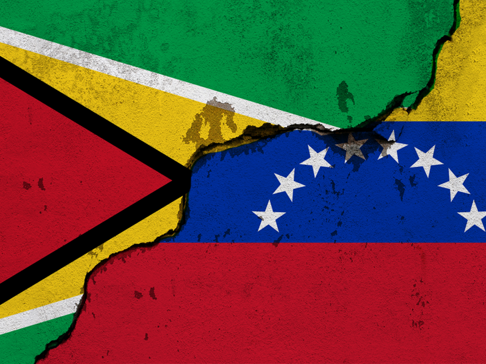

 Guyana ha tenido que lidiar con varios conflictos a lo largo de su historia, algunos de los cuales siguen siendo motivo de tensión en la actualidad. A continuación, se describen algunos de los principales conflictos que ha enfrentado el país. Desde la década de 1960, Venezuela ha reclamado una gran parte del territorio de Guyana, incluyendo la región conocida como Esequibo. Esta disputa territorial ha sido un tema candente en la relación entre ambos países, aunque las partes han tratado de resolver la disputa a través de negociaciones, hasta el momento no se ha llegado a una solución definitiva. Guyana tiene una población muy diversa étnicamente, con grupos importantes de afro-guyaneses, indo-guyaneses, amerindios y otros. A lo largo de la historia del país, ha habido tensiones y conflictos interétnicos, incluyendo disturbios y violencia en las elecciones. Estas tensiones étnicas siguen siendo un tema de preocupación en la actualidad. Guyana es rica en recursos naturales, incluyendo petróleo, gas y minerales. La explotación de estos recursos ha llevado a conflictos entre empresas, comunidades locales y el gobierno, especialmente en áreas donde se han otorgado concesiones a empresas extranjeras. La lucha por los recursos naturales también ha generado tensiones entre las comunidades locales y el gobierno. Guyana y Surinam han tenido disputas territoriales en el pasado, especialmente en la región fronteriza conocida como Corentyne. Si bien las tensiones se han reducido en los últimos años, la situación sigue siendo un tema de preocupación para ambos países. En resumen, Guyana ha enfrentado y sigue enfrentando una serie de conflictos que incluyen disputas territoriales, tensiones étnicas, conflictos por recursos naturales y tensiones con países vecinos. La resolución de estos conflictos requerirá diálogo y negociación constante entre las partes involucradas. Además de los conflictos mencionados, Guyana ha enfrentado otros desafíos a lo largo de su historia. Por ejemplo, durante la época colonial, la economía del país se basaba en la producción de azúcar y otros cultivos comerciales, y los esclavos africanos y los trabajadores contratados de India y China eran explotados en las plantaciones. La lucha por la independencia y la abolición de la esclavitud y el sistema de trabajo contratado fueron importantes hitos en la historia de Guyana. Tras la independencia en 1966, Guyana se convirtió en una república y adoptó un sistema político democrático. Sin embargo, la política del país ha sido a menudo turbulenta, con acusaciones de fraude electoral y discriminación contra ciertos grupos étnicos. El Partido Popular Progresista (PPP) ha sido uno de los partidos políticos más importantes del país, y ha estado involucrado en varios conflictos políticos a lo largo de la historia de Guyana. Además, Guyana ha sido afectada por desastres naturales, como inundaciones y tormentas tropicales, que han causado daños significativos a la infraestructura y a la economía del país. La falta de recursos y la infraestructura insuficiente han dificultado la recuperación en algunas de estas situaciones. En los últimos años, Guyana ha visto un auge en la exploración y extracción de petróleo, que ha generado una gran cantidad de interés y, al mismo tiempo, ha planteado nuevos desafíos. La gestión de los ingresos petroleros, la protección del medio ambiente y la relación con las empresas extranjeras han sido algunos de los temas clave en este ámbito. En general, Guyana ha enfrentado una variedad de desafíos y ha experimentado cambios significativos a lo largo de su historia. La resolución de los conflictos y la superación de los desafíos actuales requerirá la cooperación y el compromiso de todas las partes involucradas, así como la atención a las necesidades y preocupaciones de todas las comunidades del país.